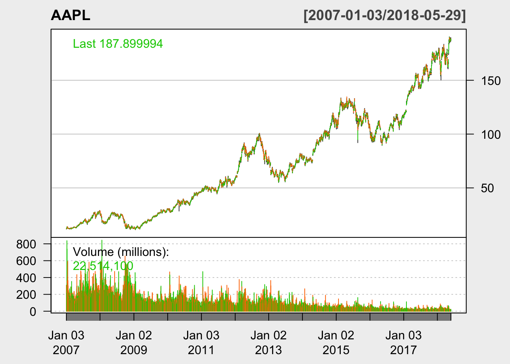
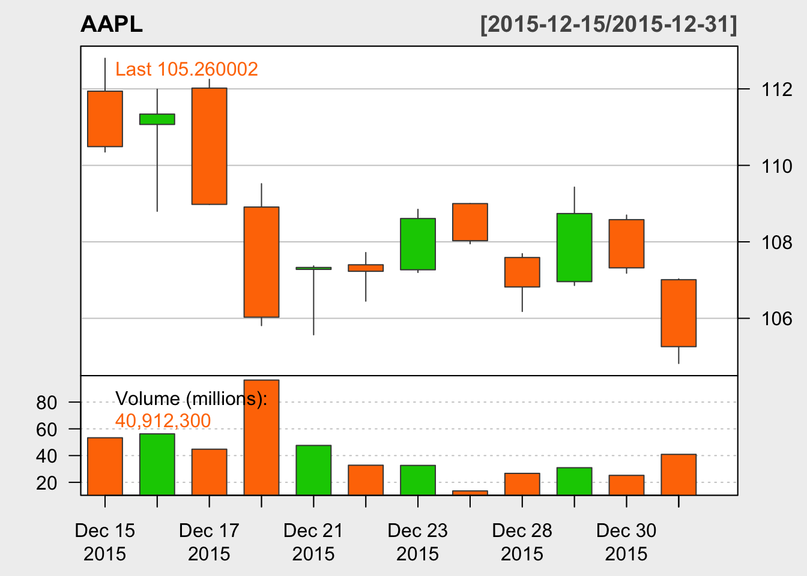
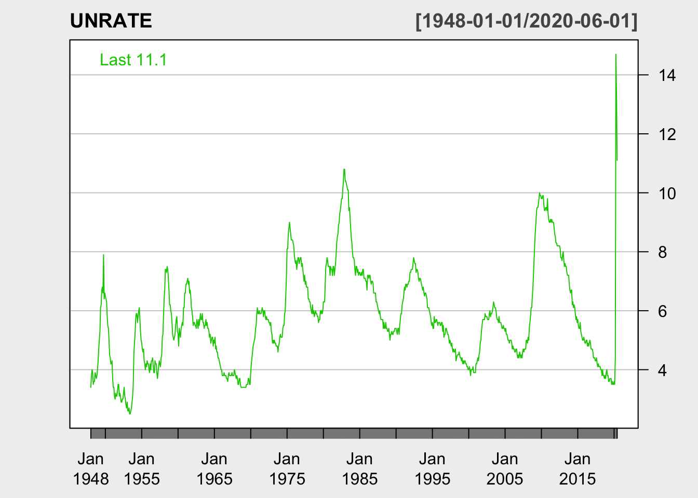
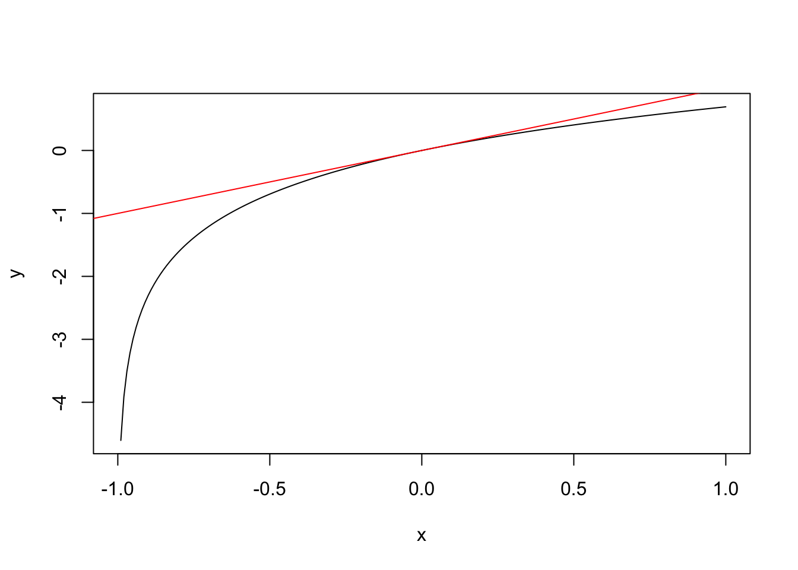
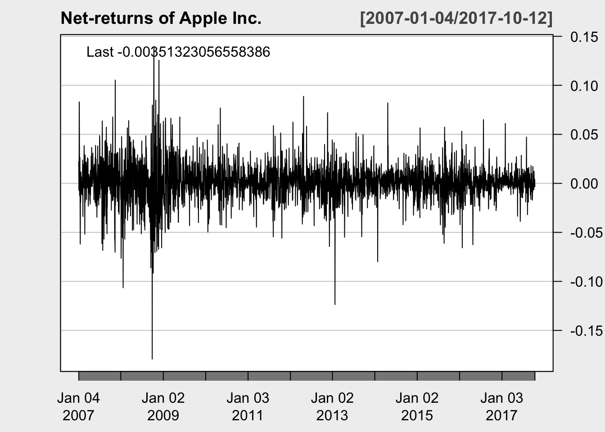
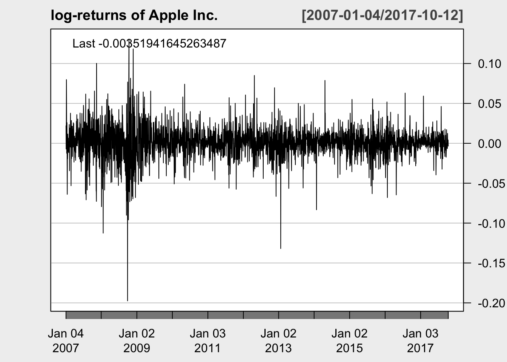

CFRM 420 Lecture Notes
2020-07-10
Lecture 1 Intro Class
- Chapters 1, 2, and 4:
- Obtaining financial data;
- principles of financial data science;
- exploratory (or empirical) data analysis,
- calculating asset returns
1.1 Getting Acquainted with R and RStudio
R is a programming language for statistical computing and graphics. It is widely used among statisticians and contains a large number of ready-to-use functions (called packages).
Start by installing R. Please visit:1.1.1 Install “Quantmod”
There are many online resources to learn R. I will briefly explain the codes presented in each class. However, you should thoroughly examine each code on your own, and use the R documentation to learn how the are used.
Let us open RStudio, and install our first package. As mentioned before, packages include ready-to-use functions. quantmod is a package that can be used for obtaining financial data.
To install the package use Tools -> Install Packages… menu in RStudio, or directly use the following command:
1.1.2 Obtaining financial data
However, to be able to use an installed package, we need to load it. This is done by the following command.
## Loading required package: xts## Loading required package: zoo##
## Attaching package: 'zoo'## The following objects are masked from 'package:base':
##
## as.Date, as.Date.numeric## Registered S3 method overwritten by 'xts':
## method from
## as.zoo.xts zoo## Loading required package: TTR## Registered S3 method overwritten by 'quantmod':
## method from
## as.zoo.data.frame zoo## Version 0.4-0 included new data defaults. See ?getSymbols.As you can see, R automatically load other packages that quantmod relies on, namely, packages xtx and zoo (both are packages that define time-series data types).
quantmod provides the function getSymbols() which can be used to find historical financial and economical data from various online resources.
Let us load historical data from Apple Inc. from Yahoo! finance. First, we need to find the symbol for apple. Searching the web, we find the symbol atThus, the symbol is AAPL. Now, we can use the following R command to obtain the data.
## 'getSymbols' currently uses auto.assign=TRUE by default, but will
## use auto.assign=FALSE in 0.5-0. You will still be able to use
## 'loadSymbols' to automatically load data. getOption("getSymbols.env")
## and getOption("getSymbols.auto.assign") will still be checked for
## alternate defaults.
##
## This message is shown once per session and may be disabled by setting
## options("getSymbols.warning4.0"=FALSE). See ?getSymbols for details.## [1] "AAPL"We have obtained the historical data of symbol AAPL, from January 2007 until May 2018, using the data source yahoo (Yahoo! finance), and store it as a variable called AAPL.
## [1] "xts" "zoo"The variable is an extended time series (xts) object, which is a subclass of type zoo. These are essentially 2 dimensional arrays, where the index rows are date/time objects.
To get the total number of rows and columns, we can use:
## [1] 2871 6So, AAPL has 2871 rows (trading days) and 6 columns.
## [1] "AAPL.Open" "AAPL.High" "AAPL.Low" "AAPL.Close"
## [5] "AAPL.Volume" "AAPL.Adjusted"- open price (the first trade of the day),
- high price (the highest price of the day),
- low price (the lowest price of the day),
- close price (the last trade of the day),
- volume (the total number of shares traded during the day),
- the adjusted prices (the price that is adjusted to include the effect of corporate events such as dividend payments and stock splits, more on this later)
1.1.3 Subset by Position
To get the first few rows of the xts object, we can use the function head(), and to get the last few rows, we can use the function tails().
## AAPL.Open AAPL.High AAPL.Low AAPL.Close AAPL.Volume AAPL.Adjusted
## 2007-01-03 12.32714 12.36857 11.70000 11.97143 309579900 10.36364
## 2007-01-04 12.00714 12.27857 11.97429 12.23714 211815100 10.59366
## 2007-01-05 12.25286 12.31428 12.05714 12.15000 208685400 10.51822
## 2007-01-08 12.28000 12.36143 12.18286 12.21000 199276700 10.57016
## 2007-01-09 12.35000 13.28286 12.16429 13.22429 837324600 11.44823## AAPL.Open AAPL.High AAPL.Low AAPL.Close AAPL.Volume AAPL.Adjusted
## 2018-05-22 188.38 188.88 186.78 187.16 15240700 182.1795
## 2018-05-23 186.35 188.50 185.76 188.36 20058400 183.3476
## 2018-05-24 188.77 188.84 186.21 188.15 23234000 183.1432
## 2018-05-25 188.23 189.65 187.65 188.58 17461000 183.5618
## 2018-05-29 187.60 188.75 186.87 187.90 22514100 182.89991.1.4 Subset by Date Range
## AAPL.Open AAPL.High AAPL.Low AAPL.Close AAPL.Volume AAPL.Adjusted
## 2015-12-23 107.27 108.85 107.20 108.61 32657400 100.9794
## 2015-12-24 109.00 109.00 107.95 108.03 13570400 100.4401## AAPL.Open AAPL.High AAPL.Low AAPL.Close AAPL.Volume AAPL.Adjusted
## 2015-12-01 118.75 118.81 116.86 117.34 34852400 109.09604
## 2015-12-02 117.34 118.11 116.08 116.28 33386600 108.11053
## 2015-12-03 116.55 116.79 114.22 115.20 41569500 107.10641
## 2015-12-04 115.29 119.25 115.11 119.03 57777000 110.66733
## 2015-12-07 118.98 119.86 117.81 118.28 32084200 109.97002
## 2015-12-08 117.52 118.60 116.86 118.23 34309500 109.92352
## 2015-12-09 117.64 117.69 115.08 115.62 46361400 107.49690
## 2015-12-10 116.04 116.94 115.51 116.17 29212700 108.00826
## 2015-12-11 115.19 115.39 112.85 113.18 46886200 105.22832
## 2015-12-14 112.18 112.68 109.79 112.48 64318700 104.57750
## 2015-12-15 111.94 112.80 110.35 110.49 53323100 102.72733
## 2015-12-16 111.07 111.99 108.80 111.34 56238500 103.51762
## 2015-12-17 112.02 112.25 108.98 108.98 44772800 101.32341
## 2015-12-18 108.91 109.52 105.81 106.03 96453300 98.58065
## 2015-12-21 107.28 107.37 105.57 107.33 47590600 99.78932
## 2015-12-22 107.40 107.72 106.45 107.23 32789400 99.69637
## 2015-12-23 107.27 108.85 107.20 108.61 32657400 100.97939
## 2015-12-24 109.00 109.00 107.95 108.03 13570400 100.44014
## 2015-12-28 107.59 107.69 106.18 106.82 26704200 99.31517
## 2015-12-29 106.96 109.43 106.86 108.74 30931200 101.10027
## 2015-12-30 108.58 108.70 107.18 107.32 25213800 99.78002
## 2015-12-31 107.01 107.03 104.82 105.26 40912300 97.864751.1.5 Visualize Data as Timeseries


1.1.6 Understanding chartSeries
- What does
chartSeriesdo?
- What is OHLC charts?

Figure 1.1: OHLC
1.1.7 Obtain Unemployment Data
We can use other sources to obtain data. For example, let us obtain monthly unemployment rate from Federal Reserve Economic Data (FRED).
We may find the symbol for unemployment rate in the following pagewhich reveals that the symbol is UNRATE.
## [1] "UNRATE"1.1.8 Visualize Unemployment Data
## [1] 870 1## UNRATE
## 1948-01-01 3.4
## 1948-02-01 3.8
## 1948-03-01 4.0
## 1948-04-01 3.9
## 1948-05-01 3.5
## 1948-06-01 3.6## UNRATE
## 2020-01-01 3.6
## 2020-02-01 3.5
## 2020-03-01 4.4
## 2020-04-01 14.7
## 2020-05-01 13.3
## 2020-06-01 11.1
1.2 Asset Return
1.2.1 Single Period Return
- Let \(P_0, P_1, \ldots\) be the price of an equity. For now, let’s assume no “corporate actions” such as dividends, split, etc.
- Net return over \([t-1,t]\):
\[ R_t:= (P_t-P_{t-1})/P_{t-1}. \]
- Gross return over \([t-1,t]\) is
\[ P_t/P_{t-1} = 1+R_t \]
- Log returns over \([t-1,t]\):
\[ r_t := \log({P_t}/{P_{t-1}}) \]
1.2.2 Multi Period Returns
- \(R_t(k)\), the net return over \([t-k,t]\), is given by:
\[ \begin{aligned} R_t(k) & := \frac{P_t}{P_{t-k}} - 1 \\ & = (1+R_t)(1+R_{t-1})\cdots(1+R_{t-k+1}) -1, \end{aligned} \]
- \(r_t(k)\), the log return over \([t-k,t]\), is given by:
\[ \begin{aligned} r_t(k) & := \log\frac{P_t}{P_{t-k}} \\ & = r_t + r_{t-1} + \cdots + r_{t-k+1} \end{aligned} \]
1.2.3 Simple Example
The following table gives two daily (adjusted) closing price of Apple stock in Dec. 2015| Date | 12/23 | 12/24 |
|---|---|---|
| Price($) | 104.56 | 104.00 |
- Gross (daily) return on 12/24 is
\[104/104.56=0.994644\] - Net return on 12/24 is
\[0.994644-1=−0.005356\] - Log return on 12/24 is
\[\log(104.00)−\log(104.56)=−0.005370\]
1.2.4 Approximation Example
For small \(|x|\) , we have
\[ x\approx \log(1+x), \] whence log and net returns are good approximation of each otherSuppose that we use log returns instead of net returns.
- How are our estimations? for losses and for gains?

1.3 Adjusted Price
There are many market events that makes our return formula inappropriate for quoted prices, e.g. dividend payments, stock splits, etc.
1.3.1 Net Return with Dividend
Let \(D_1\), \(D_2\), … be the dividends of a stock with quoted prices \(P_1, P_2,\ldots\), where \(D_t\) is the dividend paid at \(t\). The appropriate definition of the net return should be \[ R_t = \frac{P_t + D_t - P_{t-1}}{P_{t-1}}. \] Similarly, the multi-period net return \(R_t(k)\) should be \[ \begin{aligned} &\quad 1+ R_t(k) \\ & = (1+R_t)(1+R_{t-1}) \dots (1+R_{t-k+1})\\ &= \left(\frac{P_t+D_t}{P_{t-1}}\right)\left(\frac{P_{t-1}+D_{t-1}}{P_{t-2}}\right)\cdots\left(\frac{P_{t-k+1}+D_{t-k+1}}{P_{t-k}}\right) \\ &\ne \frac{P_t}{P_{t-k}} \end{aligned} \]
1.3.2 The idea behind “adjusted prices”
Find prices \(\widetilde P_{t_1}\), \(\widetilde P_{t_2}\), …, such that return are given by “simple” formulas applied to \(\widetilde P_t\). In other words, we want \[ \begin{aligned} &\quad 1+R_t = \frac{\widetilde{P}_t}{\widetilde{P}_{t-1}}\\ & \Longrightarrow\frac{P_t + D_t}{P_{t-1}} = \frac{\widetilde {P}_t}{\widetilde {P}_{t-1}}\\ & \Longrightarrow\widetilde P_t = \left(\frac{P_t+D_t}{P_{t-1}}\right) \widetilde P_{t-1} \end{aligned} \]
- There are many such adjustment for different types of events. Always use “adjust prices” to calculate returns.
1.3.3 Using Adjusted AAPL Prices
- Next, we show two ways to calculate asset returns using R. Let us first obtain the prices of Apple Inc.
## [1] "AAPL"## [1] "AAPL.Open" "AAPL.High" "AAPL.Low" "AAPL.Close"
## [5] "AAPL.Volume" "AAPL.Adjusted"1.3.4 Adjusted Prices
As mentioned before, the adjusted price is the column AAPL.Adjusted. We can obtain the column by using the $ operator:
## AAPL.Adjusted
## 2017-10-03 148.6490
## 2017-10-04 147.6867
## 2017-10-05 149.5246
## 2017-10-06 149.4380
## 2017-10-09 149.9576
## 2017-10-10 150.0153
## 2017-10-11 150.6408
## 2017-10-12 150.11161.3.5 Log and Net Return of AAPL
One can use the lag() and diff() functions (take a look at the R documentation to learn what they do).
## [1] "xts" "zoo"## [1] "xts" "zoo"## AAPL.Adjusted
## 2017-10-03 NA
## 2017-10-04 -0.0064943407
## 2017-10-05 0.0123677222
## 2017-10-06 -0.0005793969
## 2017-10-09 0.0034711500
## 2017-10-10 0.0003848614## AAPL.Adjusted
## 2017-10-03 NA
## 2017-10-04 -0.0064732981
## 2017-10-05 0.0124445188
## 2017-10-06 -0.0005792291
## 2017-10-09 0.0034771815
## 2017-10-10 0.0003849354Let us calculate the net and log returns for a longer period and plot the result.
## [1] "AAPL"AAPL.rtn = diff(AAPL$AAPL.Adjusted)/lag(AAPL$AAPL.Adjusted) # Compute net returns
colnames(AAPL.rtn)[1] = "net"
AAPL.rtn$log = diff(log(AAPL$AAPL.Adjusted)) # Compute log returns
head(AAPL.rtn)## net log
## 2007-01-03 NA NA
## 2007-01-04 0.022195488 0.021952753
## 2007-01-05 -0.007121143 -0.007146620
## 2007-01-08 0.004938096 0.004925943
## 2007-01-09 0.083070321 0.079799898
## 2007-01-10 0.047855424 0.046745622chartSeries(AAPL.rtn$net, name = "Net-returns of Apple Inc.", theme=chartTheme("white", up.col='black'))
chartSeries(AAPL.rtn$log, name = "log-returns of Apple Inc.", theme=chartTheme("white", up.col='black'))